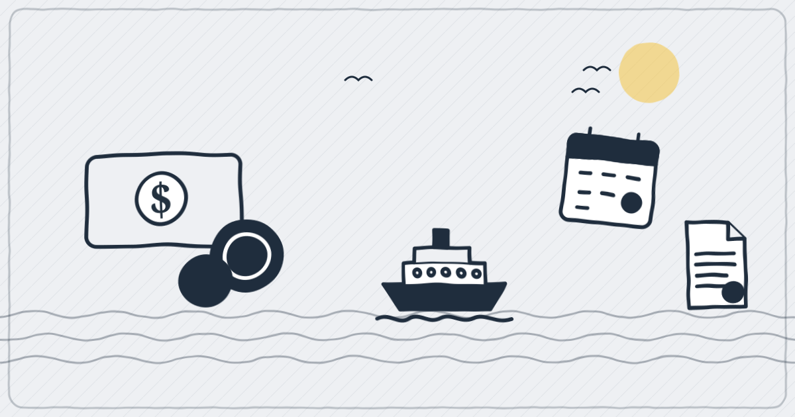

How the Exchange Rate Changes Your Cruise Cost in Canada
Almost everything about a cruise is priced in US dollars, so a weaker loonie raises your real cost even when the line never changes its price. Each one-cent move in the rate is worth about C$10 per US$1,000. Booking in Canadian dollars and prepaying extras fixes most of the bill; the onboard account is the part that floats.

A cruise bought from Canada is a US-dollar purchase spread over a year or more, and the exchange rate on each payment date decides the real price. The loonie has traded anywhere from about 1.20 to above 1.45 per US dollar within the past five years, which on a typical couple's trip is a swing of more than C$900. You cannot control the rate, but you can control how much of your bill is still exposed to it.
How much does the exchange rate really change a cruise price?
Start with one number: every one-cent move in the rate shifts the cost by roughly C$10 for each US$1,000 you spend. A couple with a US$3,200 fare and US$900 of onboard spending has US$4,100 at stake, so each cent is worth about C$41 to them.
| Rate (CAD per US$1) | What US$4,100 costs | Change from 1.35 |
|---|---|---|
| 1.30 | about C$5,330 | C$205 less |
| 1.35 | about C$5,535 | baseline |
| 1.40 | about C$5,740 | C$205 more |
| 1.43 | about C$5,865 | C$330 more |
| 1.45 | about C$5,945 | C$410 more |
Late November 2026 has the Bank of Canada rate around 1.43, after starting the month closer to 1.40. A three-cent drift inside one month is normal, and on this couple's trip it is worth about C$120. Add a typical 2.5% foreign transaction fee if your card charges one, and the gap widens.
Which cruise payments convert when?
A cruise is five or six separate transactions, and each one converts on its own day. That is why two couples in the same cabin category can pay noticeably different amounts in Canadian dollars.
- Deposit. Converts the day you book. Small, so a rate swing barely matters here.
- Final balance. Usually due 75 to 120 days before sailing, and the largest single payment. On a USD booking it floats from booking day until you pay it.
- Prepaid extras. Gratuities, drinks and wifi packages and ship excursions convert on the day you buy them, which can be any time before sailing.
- Onboard account. Everything you charge on the ship, settled on the last night in USD, converting when it posts to your card a day or two later.
- Refunds and credits. Convert back on the day the money arrives, at the bank's buying rate rather than its selling rate.
By the time you sail, a careful planner has fixed items 1 to 3 and only the onboard account is still moving with the market.
What does booking in Canadian dollars actually fix?
A CAD quote uses the line's own exchange rate on the day you book, with a cushion the line adds to protect itself. From that moment the deposit, the final balance and anything you add in CAD are fixed numbers. If the loonie falls 6 cents between booking and final payment, you pay nothing extra. If it rises 6 cents, you miss the saving.
That trade is worth making when the fare is a stretch and certainty matters more than the chance of a small win. The day-of-booking comparison that tells you whether the CAD or USD quote is cheaper is worked through in booking a cruise in Canadian dollars.
What a CAD booking does not fix
Your shipboard account. Every major line runs it in US dollars whatever currency you booked in, and the ship will convert it to Canadian dollars at checkout only at a rate worse than your bank's. Decline that offer, pay in USD, and let your card convert.
How do you hedge the onboard account?
You cannot fix it in advance, but you can shrink it and pay for it cleverly.
| Move | What it does | Rough value for a couple on 7 nights |
|---|---|---|
| Prepay gratuities before sailing | Removes US$250–350 from the floating bill | Up to C$15 saved on a four-cent move |
| Prepay a drinks or wifi package | Removes US$500–1,200 more | Up to C$50 saved on the same move |
| Book ship excursions online in advance | Fixes US$200–600 of tours | Up to C$25 saved |
| Buy onboard credit in CAD when offered | Pre-funds the account at today's rate | Varies by line |
| Use a no-foreign-fee credit card | Cuts the 2.5% fee on what is left | C$25–45 on a US$900 bill |
Is buying onboard credit in Canadian dollars worth it?
Usually, yes, for money you know you will spend. If you pay for onboard credit in Canadian dollars before sailing, you have effectively bought US dollars for the ship at today's rate, and the gratuities and drinks it covers stop floating. It is not refundable in cash if unused, so buy only what you will certainly spend.
Should Canadians hold US dollars for a cruise?
If you already have US dollars from work, a Florida or Arizona property, or a past trip, spend them on the USD parts of the cruise and the exchange rate stops mattering. A US-dollar credit card paid from a US-dollar chequing account, both widely offered by the big Canadian banks, is the simplest setup. Pay the deposit, final balance and onboard account from it and nothing converts at the ship's or the card network's rate.
For people who do not hold USD, buying it gradually works almost as well. Moving a few hundred dollars into a US-dollar account each month from booking to sailing averages the rate over a year rather than betting on one day. Nobody can time the loonie, and the fare is likely to move more than the currency while you wait, so book when the cruise suits you and average the currency afterwards.
How does a refund in US dollars lose money?
Cruise lines do cancel sailings and passengers do change plans, and refunds are where Canadians get an unpleasant surprise. A US$1,000 payment made at 1.38 cost C$1,380 plus perhaps C$35 in foreign transaction fee. If the line refunds US$1,000 three months later at 1.35, your bank converts it at its buying rate, perhaps 1.33, and credits about C$1,330. The fee on the original payment is usually not returned. You are roughly C$85 short on money the line gave back in full.
A CAD booking avoids that loss because the refund is simply the Canadian amount you paid. Where a USD booking is the better price, keep refundable extras to a minimum and use a card with no foreign fee so the only leak is the buy-sell spread. What the line owes you when it cancels, and how long refunds take, is covered in what happens when the cruise line cancels your sailing.
Build the exchange rate into the budget, not the fare
The mistake is treating the fare as the budget. Put the whole trip in US dollars first: fare, gratuities, packages, excursions, onboard spending and the pre-cruise hotel if it is in the United States. Convert the total at today's rate, then add a buffer of about 5% on anything still unpaid in USD. For a couple with US$4,100 outstanding that buffer is about C$290, which covers a seven-cent slide without a single awkward conversation at the purser's desk.
The Alaska budget in what an Alaska cruise from Vancouver really costs does this in Canadian terms line by line.
Want this checked for your own sailing? A licensed cruise consultant can price it up and answer questions for free, with no obligation.
Ask a cruise expert →Three rules for a moving loonie
Fix what you can: book the fare in CAD when certainty matters, and prepay gratuities and packages in CAD where the line allows it. Keep the floating part small, and pay it with a no-foreign-fee card. Budget a 5% buffer on the unpaid USD, then let the rate do what it likes.
Questions people also ask
How much does a weak Canadian dollar add to a cruise?
For a couple spending US$4,000 on fare and onboard extras, a five-cent slide in the loonie adds about C$200. The fare is only exposed until you have paid it in full; the onboard bill is exposed until the last night.
Does booking a cruise in Canadian dollars protect me from the exchange rate?
Yes, for the fare. A CAD booking fixes every scheduled payment at the rate built into the quote on booking day, so the final balance is exactly the number on your confirmation. It does nothing for what you spend on the ship, which is always billed in USD.
Why did my cruise refund come back smaller than I paid?
A USD charge refunded to a Canadian card converts back at the rate on the refund date, and banks use a lower rate to buy your US dollars than they used to sell them. Any foreign transaction fee on the original payment usually stays with the bank too.